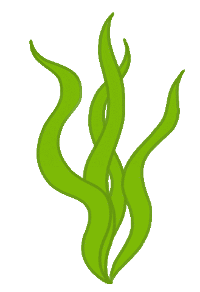
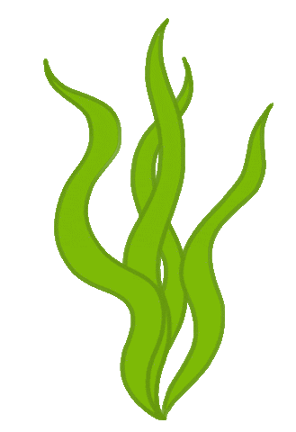

Small herbivore with a worm like body that flies and has no legs and like honey, nocturnal, and can be used as a paper clip. It can produce algae through its back, has no knees(duh),likes to dip in honey, and puffed out.
Poofy can be used as a paper clip, and lives in swamps. It is pretty rare, found 1 in 8000 swamps. Only seven will be present at a time. It likes to eat the algae on it's back and the algae in the swamp. It can survive in very cold climates, but not hot ones. Comes in very strange but interesting colors
Poofy likes to hang out with it's friends, and maybe they like it. It searches for honey, but it is never lucky. Swiming in the swamp is something it likes to do and loves to play pranks on fish.


 
